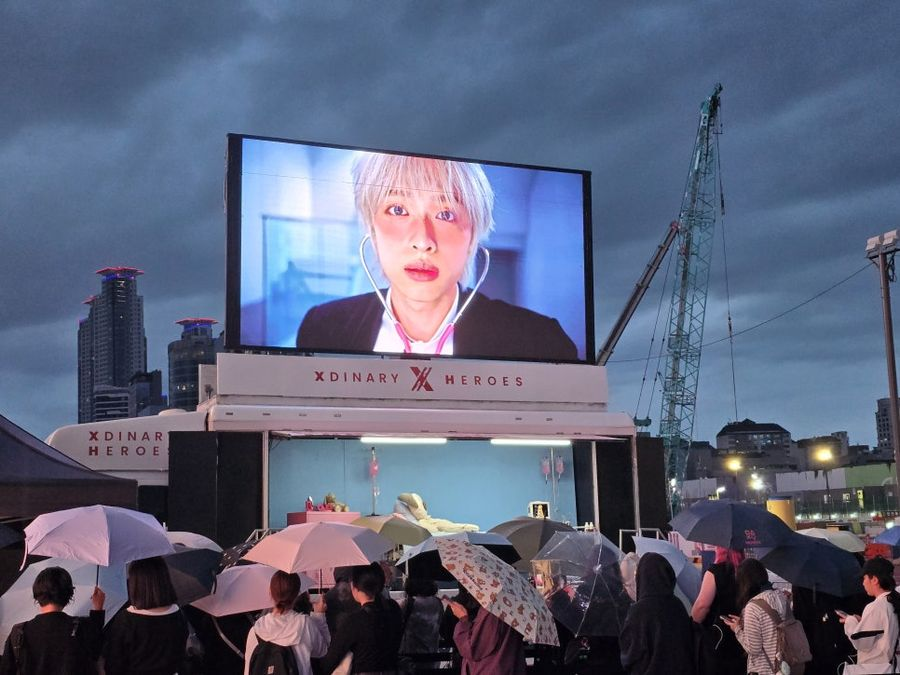
팬덤·엔터JYP 아티스트 앨범 홍보
승강식 전광판으로 아티스트 영상을 크게 틀고, 차 안은 앨범 콘셉트에 맞춰 꾸며 팬들이 머무는 공간으로 만들었습니다.
블로그에서 사진 더 보기 → 블로그 2026.08
기획사 앨범 홍보부터 집회, 축제, 주민총회까지. 드림애드컴 차량과 스크린이 다녀온 현장을 모았습니다. 사진을 누르면 블로그에서 더 많은 사진을 볼 수 있습니다.
우리 행사와 비슷한 사례를 골라 보세요. 상담 때 "○○ 사례처럼"이라고 말씀하시면 더 빠릅니다.

팬덤·엔터승강식 전광판으로 아티스트 영상을 크게 틀고, 차 안은 앨범 콘셉트에 맞춰 꾸며 팬들이 머무는 공간으로 만들었습니다.
블로그에서 사진 더 보기 → 블로그 2026.08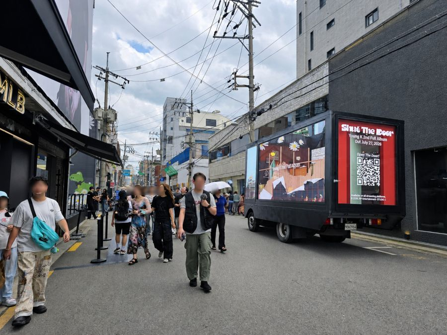
팬덤·엔터차를 검정으로 칠하고 화면을 줄이는 대신 차 안을 앨범 무드로 꾸몄습니다. 현장 사진이 SNS로 퍼지도록 설계했습니다.
블로그에서 사진 더 보기 → 블로그 2026.07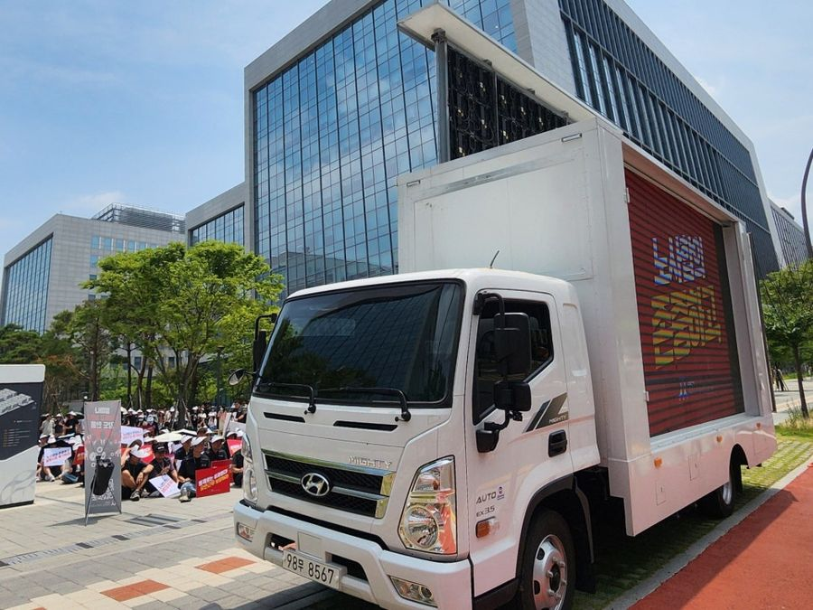
집회·시위차 양쪽 화면에 같은 내용을 띄워 어느 방향에서도 보이게 했습니다. 화면을 위로 올려 사람들 머리에 가리지 않습니다.
블로그에서 사진 더 보기 → 블로그 2026.07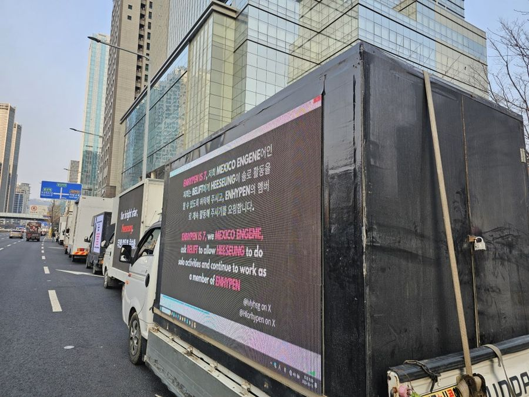
팬덤·엔터해외 팬들이 모금해 빌린 트럭이 사옥 앞에서 요구 문구와 아티스트 영상을 반복해 틀었습니다. 언론 기사로도 이어졌습니다.
블로그에서 사진 더 보기 → 블로그 2026.06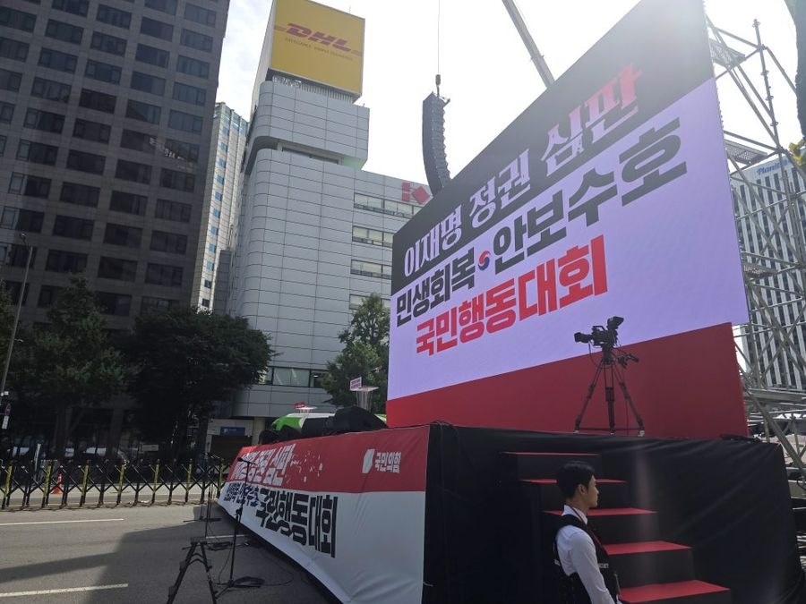
집회·시위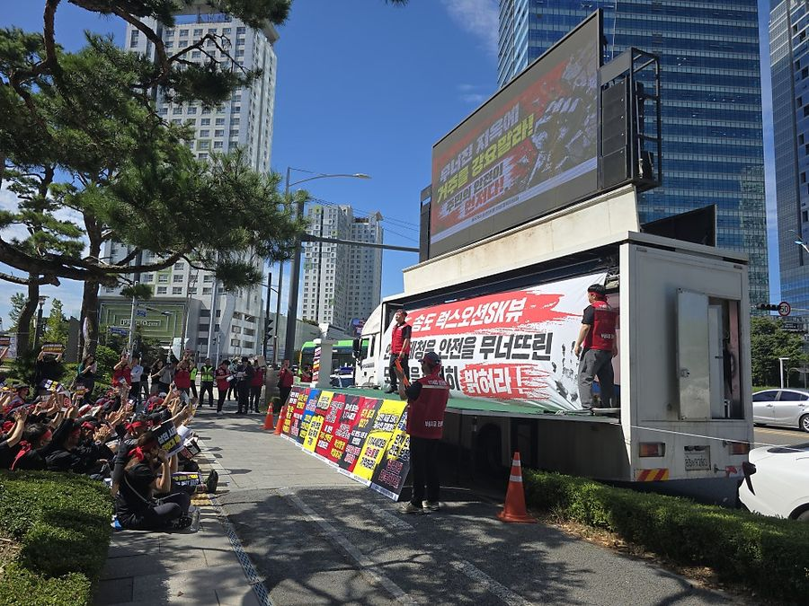
집회·시위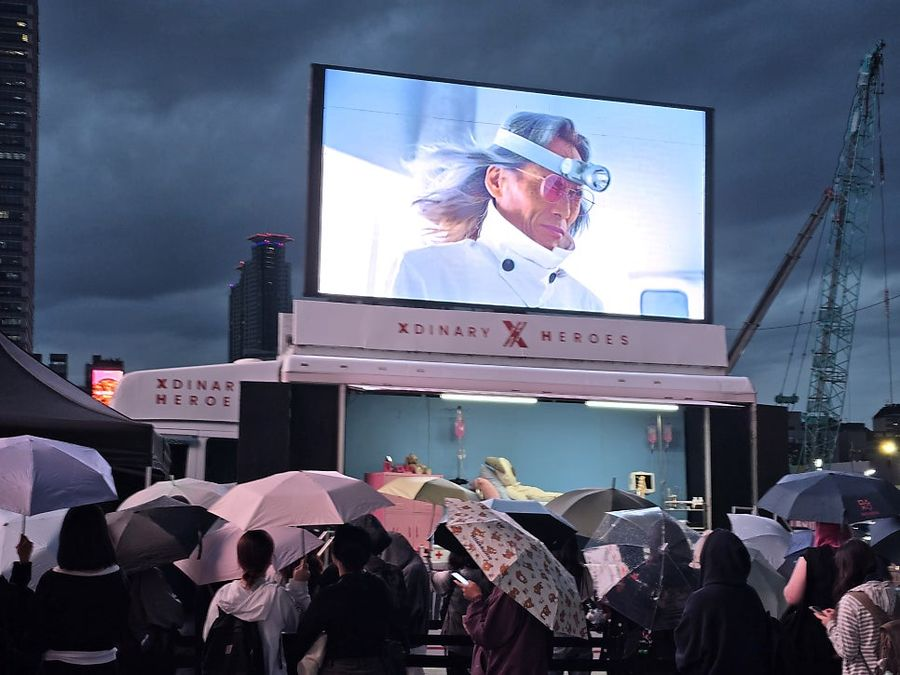
LED 스크린야외 무대 옆에 300인치 스크린을 세우고 행사 영상과 실시간 화면을 송출했습니다. 설치부터 운영까지 맡았습니다.
블로그에서 사진 더 보기 → 블로그 2026.09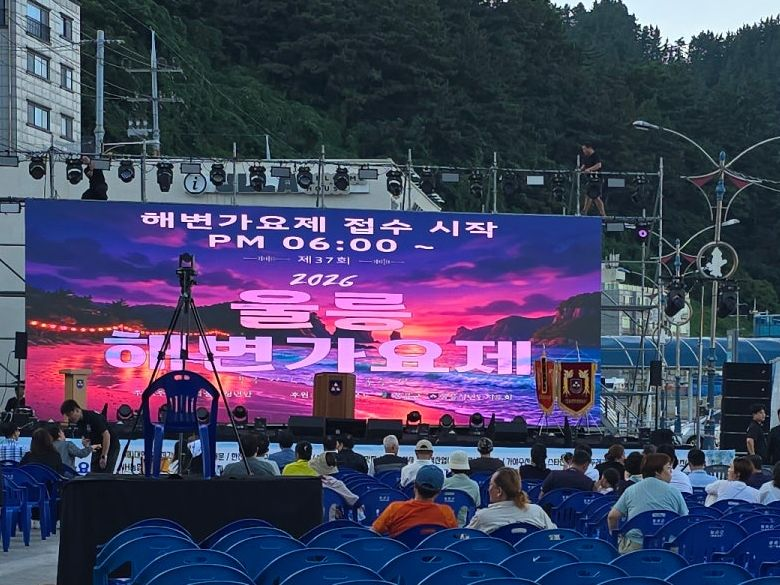
LED 스크린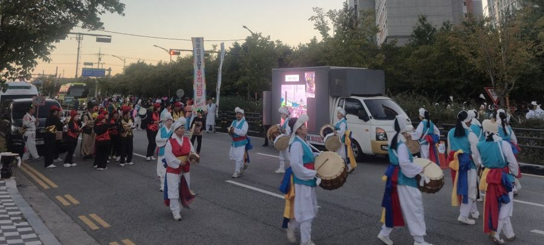
홍보·행사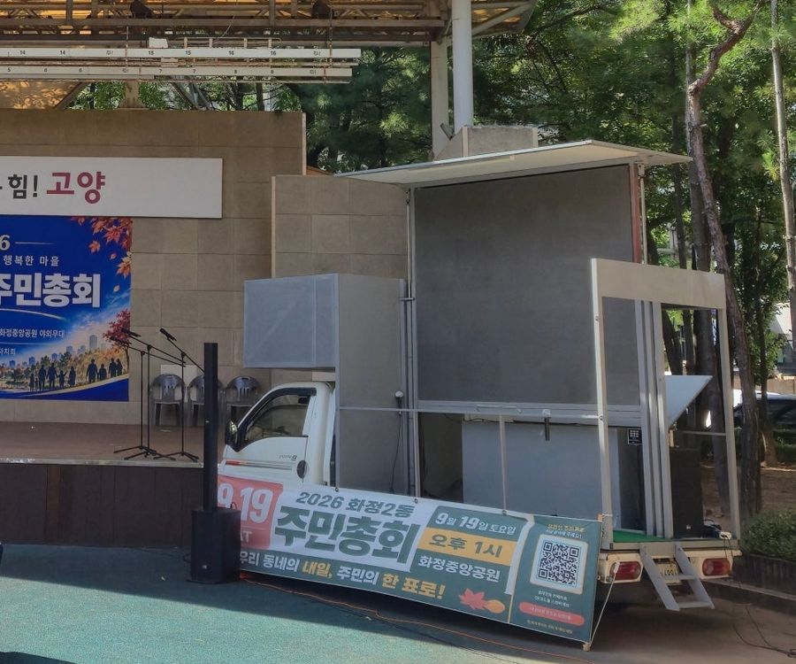
홍보·행사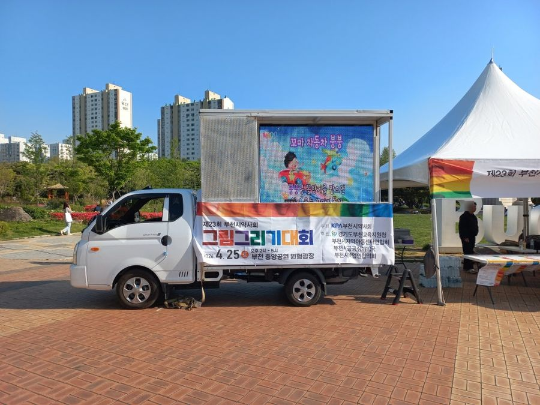
홍보·행사행사 안내·일정·주의 사항을 띄우고, 시상식 때는 차량이 무대 역할을 했습니다. 아이들 작품 활동도 실시간으로 비췄습니다.
블로그에서 사진 더 보기 → 블로그 2026.04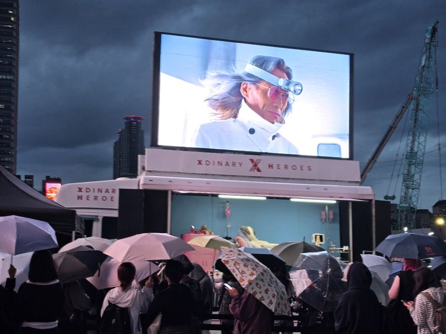
홍보·행사JYP엔터테인먼트 야외 홍보에 쓰였고, 드라마 촬영 현장에도 콘셉트에 맞춰 차량을 지원했습니다.
블로그에서 사진 더 보기 → 블로그 2026.02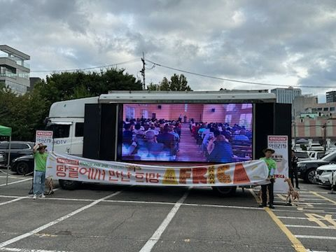
홍보·행사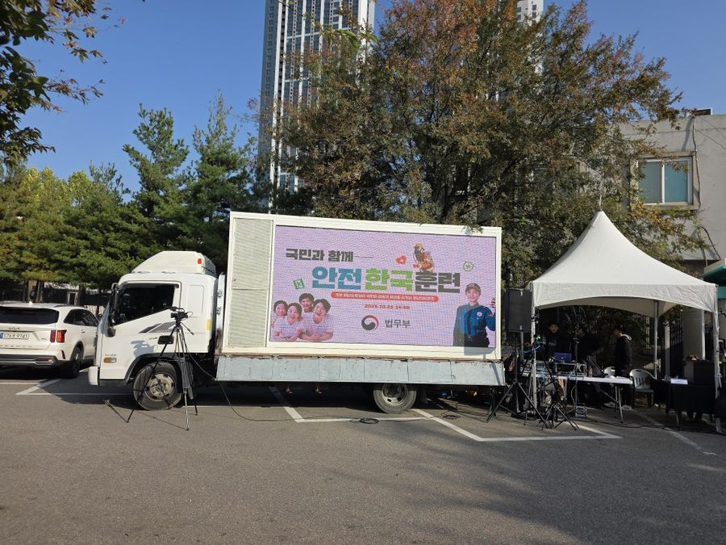
홍보·행사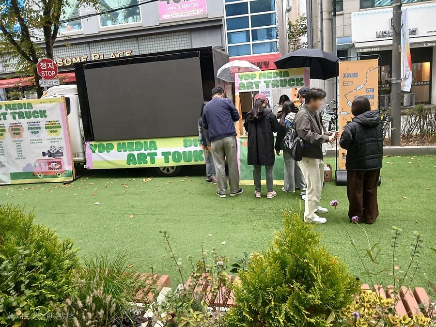
홍보·행사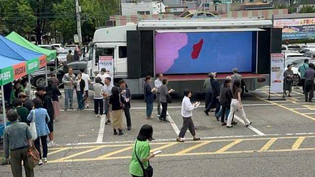
홍보·행사비가 오는 날에도 300인치 화면으로 찬양과 행사 영상을 송출했습니다. 마이크·음향까지 차량에 갖춰 갔습니다.
블로그에서 사진 더 보기 → 블로그 2025.10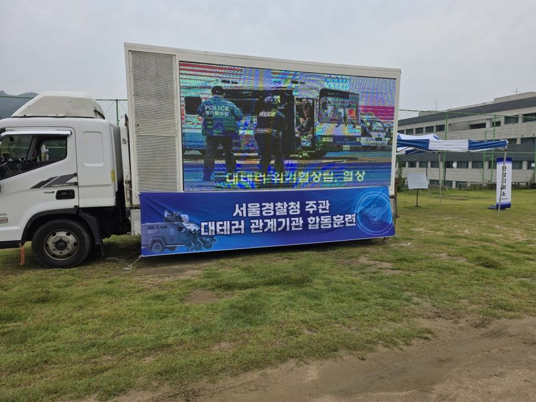
홍보·행사천안 자사 공장에서 제작·정비한 차량을 중간 업체 없이 배차합니다
1일 6시간 기준, 전문 기사님 출장비와 유류비가 견적에 들어 있습니다
영상 재생 방식을 미리 알려 주시면 차량에서 먼저 틀어 보고 출발합니다
차량 자체 발전기로 화면과 음향을 돌립니다. 차 세울 자리만 있으면 됩니다
도색·래핑·차 안 공간 꾸미기까지 공장에서 맞춰 드립니다
제주까지 전국 배차, 해외 팬덤 대여도 진행해 왔습니다
현장 소식은 네이버 블로그에 먼저 올라옵니다.
네. 이 페이지의 사례 이름을 말씀해 주시면 차량 크기·화면·운영 방식을 그 사례에 맞춰 바로 안내해 드립니다. 날짜·장소·인원만 함께 알려 주세요.
네. 천안 자사 공장에서 도색, 래핑, 차 안 공간 꾸미기까지 맞춤 제작합니다. JYP 아티스트 앨범 홍보 차량도 이렇게 만들었습니다. 제작 기간이 필요하니 일정을 먼저 알려 주세요.
네. 비 오는 날 야외 종교 행사에서도 5톤 300인치 차량을 운영했습니다. 날씨가 아주 나쁠 때는 안전을 위해 운영 방식을 미리 상의합니다.
네. 해외 팬 연합이 모금해 빌린 사례가 있습니다. 영문 안내 페이지(en.html)와 이메일 ad3611@naver.com으로 상담할 수 있습니다.
네이버 블로그(blog.naver.com/dreamadcom_)에 현장 사진과 글이 계속 올라옵니다. 이 페이지 아래 '블로그 최신 현장 글'에서도 바로 볼 수 있습니다.